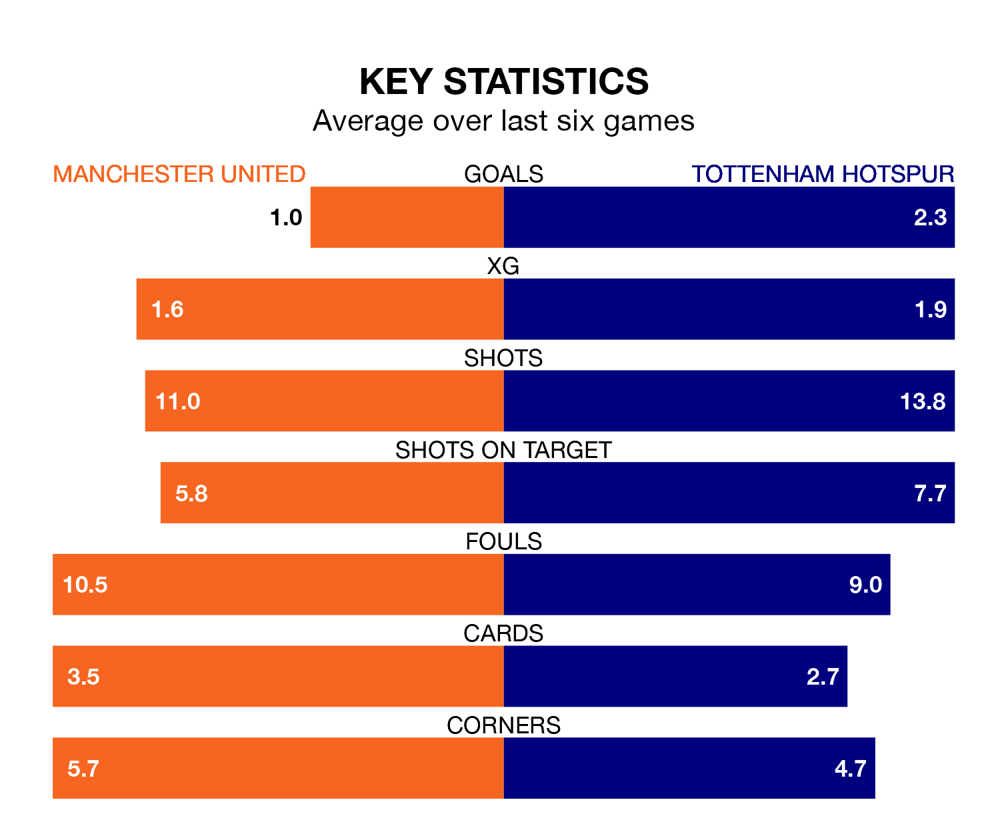

Tottenham Hotspur face a challenge to maintain their high-scoring form away against a tight Manchester United defence on Sunday.
With 42 goals in 20 games, Spurs are the fourth-highest scorers in the Premier League ahead of the 4.30pm kick-off at Old Trafford.
They face a Red Devils side who have scored 22 in 20 matches, but conceded only 27 goals, putting them joint-fourth among the league's tightest defences – only Liverpool, Manchester City and Arsenal have conceded fewer goals.
In André Onana, United can rely on one of the league's safest pair of hands. He has kept six clean sheets in his 20 appearances this season, and no 'keeper has prevented the opposition scoring more often in the Premier League.
In Spurs's net, Guglielmo Vicario has five clean sheets in 20 games.
In the last 10 years, United and Spurs have played each other on 21 occasions. United won 12 of them, Spurs six, and they drew three times.
On average, the Red Devils scored 1.4 goals and Spurs 1.3 in those matches.
Their last meeting was on August 19, when Spurs won 2-0 at home.
Tottenham are fifth in the table after 20 games, of which they have won 12 and drawn three, earning 39 points.
The Red Devils are three places behind the away team in eighth, with 10 wins and one draw putting them on 31 points.
The hosts are in mixed form in the Premier League, with two wins and a draw from their last six games.
With four wins and two losses over that period, Spurs's form is better – they have taken 12 points from 18, compared to United's seven.
United's last match was on December 30, a 2-1 loss against Nottingham Forest, with Marcus Rashford getting the goal for the Red Devils.
Spurs beat AFC Bournemouth 3-1 last time out, on December 31, with Heung-Min Son, Pape Matar Sarr and Richarlison on the scoresheet.
Updated: 11:31, 09/01/24